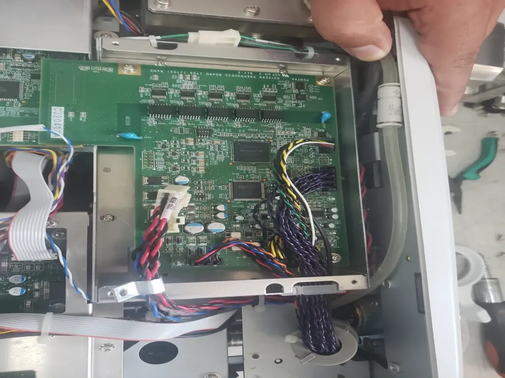
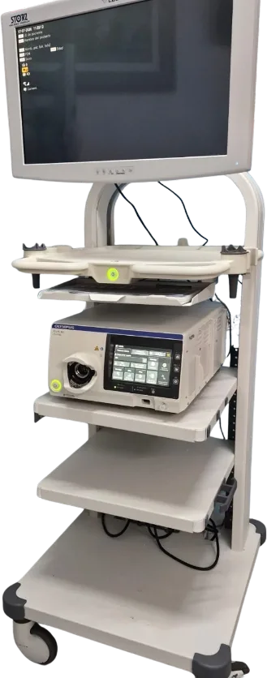
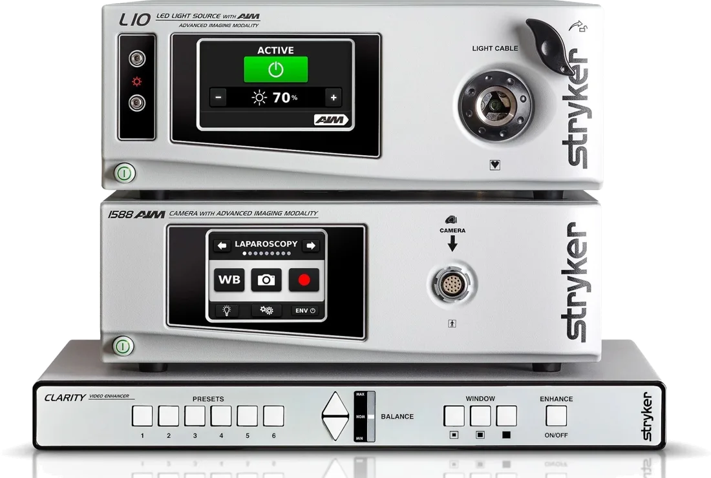

Venta
Torres, ópticas e instrumental nuevo y reacondicionado, con garantía y asesoría de compra.
Visión clara para cada procedimiento.Soluciones completas en endoscopia, laparoscopia, histeroscopia y urología: equipo, instrumental y servicio técnico con las marcas más reconocidas del mundo, con garantía nacional.
Compra, mantenimiento o renta: cada servicio está pensado para que tu unidad pase el menor tiempo posible fuera de operación.
Torres, ópticas e instrumental nuevo y reacondicionado, con garantía y asesoría de compra.
Servicio técnico especializado con diagnóstico y refacciones originales para volver a operar pronto.
Equipo por procedimiento, campaña o periodo extendido; ideal para picos de demanda o reparaciones.
25 años en equipo médico endoscópico. No improvisamos: lo conocemos desde adentro.
Equipo nuevo y reacondicionado de las cinco marcas, con garantía y asesoría de compra.
Nuestro servicio técnico especializado diagnostica el componente exacto que falla y lo repara con refacciones originales. El resto de tu torre conserva su configuración y vuelve a operar antes.

Cada reparación se hace con refacciones originales, para que el equipo conserve su desempeño y su configuración.
Técnicos dedicados a equipo médico endoscópico. Reducimos el tiempo que tu equipo pasa fuera de operación.
Si tu unidad no puede detenerse, te rentamos equipo mientras se resuelve la reparación.
Solicitar mantenimientoExplora nuestra galería de equipo hospitalario por especialidad y descarga el catálogo completo en PDF.


Detrás de Hidra Tecnical está la experiencia del Arq. Cristóbal López Guillén: 25 años en tecnología médica. Servicio personalizado, profesionales experimentados y resultados comprobados.
de trayectoria en equipo médico endoscópico.
Pentax, Fujinon, Olympus, Storz y Stryker.
Venta, mantenimiento y renta de equipo.
Endoscopia, laparoscopia y endourología.
El Arq. Cristóbal López Guillén comienza su carrera en tecnología médica en INSCIMI y Endoservice de México.
Nace una empresa enfocada en la venta, renta y mantenimiento de equipo de endoscopia y laparoscopia.
Ser la empresa líder en México en distribución y renta de equipo médico para procedimientos endoscópicos, por innovación, servicio y compromiso con el sector salud.
Lo que suelen preguntarnos antes de cotizar. ¿Tienes otra duda? Habla directamente con uno de nuestros asesores.
Trabajamos con Pentax, Fujinon, Olympus, Storz y Stryker: torres, ópticas e instrumental nuevo y reacondicionado.
Sí. Todo equipo de venta, nuevo o reacondicionado, incluye garantía y asesoría de compra para elegir la configuración adecuada a tu unidad.
Servicio técnico especializado con diagnóstico y refacciones originales, enfocado en reducir el tiempo que tu equipo pasa fuera de operación.
Sí, por procedimiento, por campaña o por periodo extendido. Es ideal para picos de demanda o mientras se resuelve la reparación de tu propio equipo.
Escríbenos por WhatsApp al +52 333 811 7858, llámanos o envía un correo a hidratecnical@gmail.com. Te responde directamente un asesor con servicio personalizado.
Hagamos un trato: habla directamente con uno de nuestros asesores. También en hidratecnical@gmail.com